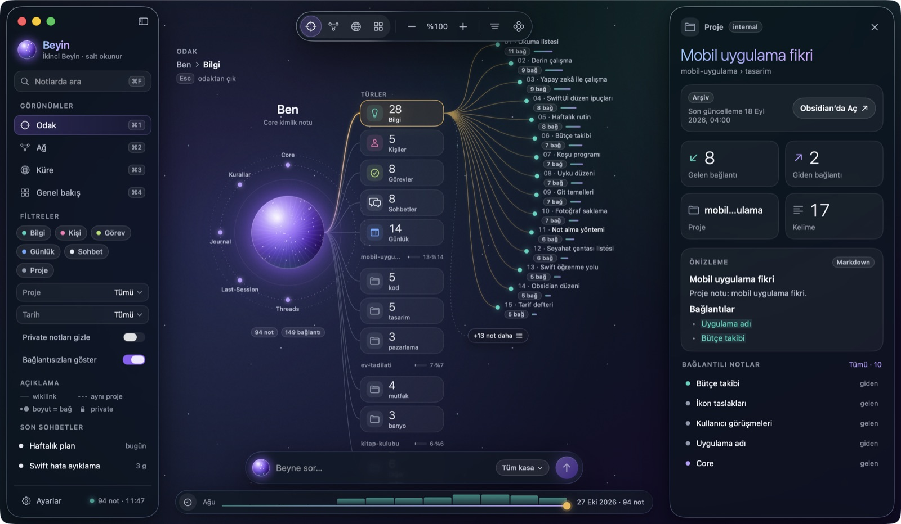

İkinci beynini gör.
Beyin, Obsidian kasanı canlı bir ağ, dönen bir küre ve günlük bir özet olarak gösterir. Notlarına dokunmaz, internete çıkmaz.
macOS 26 Tahoe ve üstü için. Ücretsiz ve açık kaynak (MIT).
Arkadaki ağ, örnek kasanın gerçek bağlantıları. Üzerine gel.
Dört görünüm, tek kasa
Sayılar elle yazılmaz. Obsidian'da bir not eklediğinde ya da bağladığında Beyin klasörü yeniden okur ve görünümler kendiliğinden güncellenir.

Kurulum
Beş dakikalık iş. Kasan ve avenoxbeyin zaten hazırsa doğrudan üçüncü adıma geç.
-
Bir Obsidian kasası hazırla
Obsidian'ı kur ve bir kasa oluştur. Kasa, içinde Markdown notların duran sıradan bir klasördür. Beyin bu klasörü okur.
-
avenoxbeyin'i kur isteğe bağlı
avenoxbeyin, Claude Code gibi ajanlara kalıcı hafıza veren açık kaynak bir ikinci beyin sistemi. Kurarsan Beyin çekirdek notlarını, projelerini ve sohbetlerini ayrı ayrı tanır. Kasa klasörünü Claude Code'da aç ve şunu yaz:
https://avenox.lol/beyin.md adresini oku. Bu klasöre ikinci beynimi kur. -
Beyin'i indir
Beyin.zip dosyasını indir, çift tıklayıp aç ve Beyin.app'i Uygulamalar klasörüne sürükle.
İlk açılışta macOS "Beyin açılmadı" derse Sistem Ayarları › Gizlilik ve Güvenlik bölümüne git ve Yine de Aç düğmesine bas. Bu sürüm henüz Apple onaylı olmadığı için bunu bir kez yapman gerekir.
Terminal'i seviyorsan bu komut uyarı çıkarmadan kurar:
curl -fsSLO https://github.com/yigit2015/beyin-mac/releases/latest/download/Beyin.zip ditto -x -k Beyin.zip /Applications && open /Applications/Beyin.app -
Aç ve kasanı seç
Kasan
~/Beyinklasöründeyse Beyin doğrudan açılır. Değilse açılış ekranında Başka klasör seç… düğmesine bas ve kasa klasörünü göster. Seçim hatırlanır; sonra Ayarlar'dan değiştirebilirsin.
Kendi notlarını açmadan önce denemek mi istiyorsun? Örnek kasayı indir, aç ve dördüncü adımda o klasörü seç. İçindeki 94 not uydurmadır.
Notların senin
Beyin bir pencere, depo değil. Yazma ve düzenleme Obsidian'da kalır.
Asla yazmaz
Kasandaki hiçbir dosyayı değiştirmez, taşımaz ya da silmez. Bir notu düzenlemek için çift tıkla, Obsidian'da açılsın.
İnternete çıkmaz
Hesap, analitik ya da sunucu yok. "Beyne sor" cihazındaki notlarda yerel arama yapar.
Private notlar gizli
Frontmatter'ında "visibility": "private" olan notların içeriği gösterilmez ve aramaya girmez.
Hangi kasalarla çalışır?
avenoxbeyin kasası
Kökte 🔮 850-Companion klasörü varsa Beyin onu tanır: çekirdek notlar (Core, Kurallar, Last-Session, Threads, Journal) ortadaki küre olur; projeler, günlükler, görevler, kişiler ve sohbetler kendi renginde kümelenir.
Herhangi bir Obsidian kasası
Her üst klasör bir küme, içindeki klasörler alt küme olur. [[wikilink]]'ler Obsidian gibi ada göre çözülür. JSON ve YAML frontmatter okunur.
Kısayollar
| ⌘1⌘2⌘3⌘4 | Odak, Ağ, Küre, Genel bakış |
| ⌘F | Notlarda ara |
| ⌘L | Beyne sor |
| ⌘K | Komut paleti |
| ⌘O ya da çift tık | Seçili notu Obsidian'da aç |
| ⌘R | Kasayı yeniden oku |
| ⌘+⌘−⌘0 | Yakınlaştır, uzaklaştır, sıfırla |
Sorular
macOS "Beyin açılamıyor" ya da "doğrulanamadı" diyor
Bu sürüm henüz Apple tarafından onaylanmadı (notarize edilmedi), bu yüzden macOS ilk açılışta uyarır. Sistem Ayarları › Gizlilik ve Güvenlik bölümünün altındaki Yine de Aç düğmesine bas; bir kez yeterli. Kurulum adımlarındaki Terminal komutu uyarı çıkarmaz. Kod açık, istersen kendin de derleyebilirsin.
avenoxbeyin kurmak şart mı?
Hayır. Beyin her Obsidian kasasıyla çalışır. avenoxbeyin kuruluysa çekirdek notları, projeleri ve sohbetleri ayrıca tanır.
Windows'ta ya da eski macOS'ta çalışır mı?
Hayır. Beyin, macOS 26'nın cam (Liquid Glass) arayüzüyle yazılmış yerel bir Mac uygulaması. Eski sürümlerde açılmaz.
Claude Code sohbetlerim de görünebilir mi?
Evet, isteğe bağlı bir kancayla. Sohbet arşivi her konuşmayı kasana Markdown olarak yazar ve Beyin onları Sohbetler olarak gösterir. Konuşmanın tam metni diske yazıldığı için kurmadan önce sayfadaki notları oku.
Bir hata buldum, bir fikrim var
GitHub'da bir issue aç. Kod açık; katkılara da açığız.